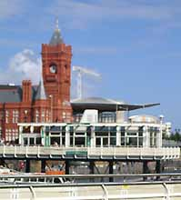
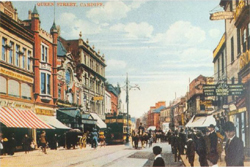

L'histoire de Cardiff !

Ville de 315 000 habitants, Cardiff (Caerdydd en gallois) est la capitale du Pays de Galles depuis 1955.
La première installation humaine sur le site actuel de Cardiff date de l'an 75 av. JC par les romains.
Mais après le départ des romains de l'île de Bretagne (comme on appelait la Grande-Bretagne à l'époque), le site reste inoccupé jusqu'aux conquêtes normandes en 1093.
Le chevalier normand Robert Fitzhamon construit un château (qui est aujourd'hui devenu Cardiff Castle) qui donnera naissance à la ville de Cardiff.
La ville est régulièrement ravagée par les batailles entre anglais et gallois, aussi l'acte d'union en 1536 entre l'Angleterre et le Pays de Galles apporte une certaine stabilité à Cardiff.
Mais bien que ville importante en tant que port, marché et évêché, Cardiff ne compte que 1 000 habitants en 1801 ! C'est la Révolution Industrielle et l'exploitation du charbon et du fer dans les vallées au nord de Cardiff qui va permettre le développement de la ville.
Cardiff dans les années 20

En 1913, Cardiff est même le premier port mondial d'exportation de charbon !
Cardiff devient une vraie ville champignon : 170 000 habitants à la fin du 19ème siècle, 227 000 en 1931, 315 000 aujourd'hui ! De vastes mouvement d'immigration font de Cardiff une ville cosmopolite.
Mais l'effondrement de la demande de charbon après la Première Guerre Mondiale, la crise économique de 1929 et les gros dégâts des bombardements pendant la Seconde Guerre Mondiale, vont mettre à genous la ville...
La désignation de Cardiff comme capitale du Pays de Galles en 1955 va redonner goût à la vie à Cardiff. Aujourd'hui Cardiff est devenue une ville commerçante et administrative, jeune et dynamique.
Et Cardiff occupe un rôle politique important depuis que la Grande-Bretagne a accordé, en 1997,un semblant d'autonomie au Pays de Galles (avec en particulier la création de la National Assembly of Wales à Cardiff). Des travaux de rénovation importants ont transformé l'ancien quartier des docks, devenu Cardiff Bay. Cardiff ambitionne tout simplement de devenir l'une des plus belles cités maritimes en Europe ... A noter que la ville de Cardiff est jumelée avec Nantes, ce qui explique l'existence du “Boulevard de Nantes” à Cardiff.